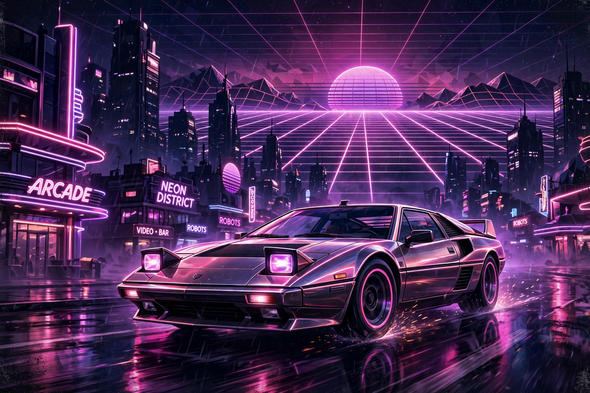

From Wikipedia, the free encyclopedia

| Birth name | Vincent Belorgey |
|---|---|
| Born | 31 July 1975, Seine-Saint-Denis, France |
| Genres | French house, synthwave, electro house |
| Occupation | Musician, producer, DJ, actor |
| Years active | 2005–present |
| Labels | Record Makers |
Kavinsky (born Vincent Belorgey, 31 July 1975) is a French electronic musician, producer and DJ. A leading figure of the synthwave (or outrun) genre, he built his music around a fictional persona: a man who crashed his Ferrari Testarossa in 1986 and returned from the dead in 2006 to make electronic music. His dark, cinematic sound draws on 1980s film soundtracks, arcade games and horror movies.
Belorgey began making music after receiving an old Macintosh from his friend Quentin Dupieux (the musician and filmmaker known as Mr. Oizo), and released his first EP, Teddy Boy, in 2006 on the Record Makers label. He followed it with the EPs 1986 (2007) and Nightcall (2010). "Nightcall", produced with Guy-Manuel de Homem-Christo of Daft Punk and featuring vocals by Lovefoxxx, was used as the title track of the 2011 film Drive, bringing Kavinsky worldwide fame and making the song a defining anthem of the synthwave movement.
His debut studio album OutRun (2013), named after Sega's 1986 arcade racing game, expanded the Kavinsky mythos into a concept record narrated in part by the artist himself, including the singles "ProtoVision" and "Odd Look" — the latter later remixed with The Weeknd. After a long hiatus, Kavinsky returned with the single "Renegade" (featuring Cautious Clay) in 2021 and his second album Reborn in 2022. He has also acted in films by Dupieux, including Steak (2007).